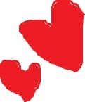
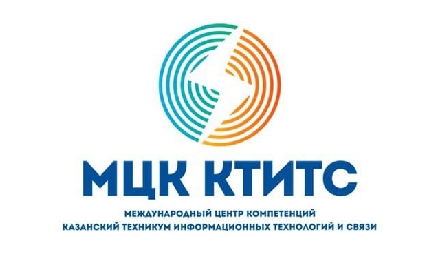
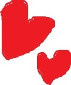

  
| Главная | История | Преподаватели | Группа |
Здесь
Ты узнаешь
Мои истинные мысли
Знаешь, я тут подумал… Уже почти год учусь в МЦК-КТИТС, а ощущение, будто попал в какую-то другую реальность. Я же поступал просто «куда-то в тех», думал: отучусь и свободен. Но это место меня сильно удивило.
Здесь реально здорово. Самые яркие впечатления — это, конечно, люди. Я пришёл с нулем знакомств, а сейчас у меня целая группа друзей, с которыми мы всё свободное время тусим. С ними даже зубрёжка перед сессией превращается в прикол — сидим в аудитории, объясняем друг другу темы, смеёмся. Без них было бы в разы скучнее.
А ещё тут просто шикарные преподаватели. Не те, кто бубнит под запись, а те, кто горит своим предметом. Наш информатик, например, может так объяснить сложную тему, что всё встаёт на свои места. Видно, что им не всё равно, как мы усвоим материал. Если кто-то не понял — всегда останутся, разберут ещё раз. Из-за такого отношения и учиться хочется.
Но самый крутой человек здесь — это наш куратор. Мужик, которого все в группе уважают. Он не просто бумажки собирает, а реально за нас переживает. Всегда выслушает, даст совет, если проблемы с учёбой — поможет разобраться. А если ситуация серьёзная — он всегда на нашей стороне, будет стоять горой. Чувствуешь, что за тобой есть надёжный тыл.
Короче, МЦК-КТИТС для меня сейчас — это не просто техникум. Это место, где интересно учиться, где тебя понимают и поддерживают. И я ни капли не жалею, что поступил именно сюда.
Ссылки, которые тебе могут быть полезны, если ты заинтересовался КТИТС-ом
Главная страница МЦК-КТИТС:
...Щёлкни сюда...
ДО МЦК-КТИТС:
...Щёлкни сюда...
ДО МЦК-КТИТС(старый сайт):
...Щёлкни сюда...
Сайт в котором можно посмотреть свой рейтинг и баллы(Мой КТИТС-Баллы):
...Щёлкни сюда...